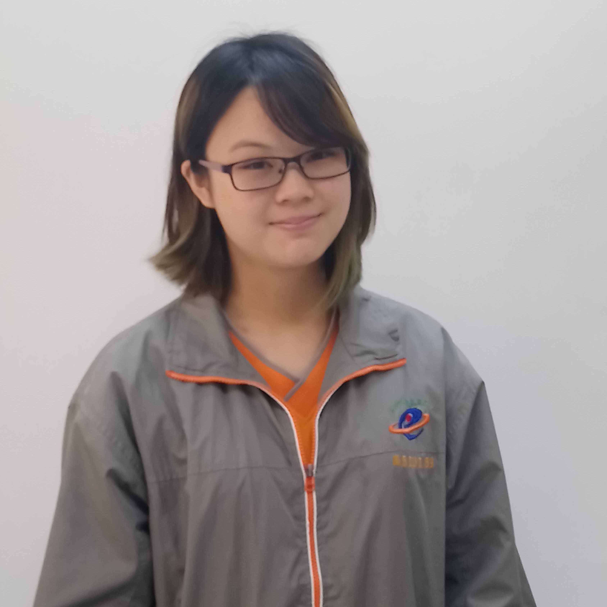
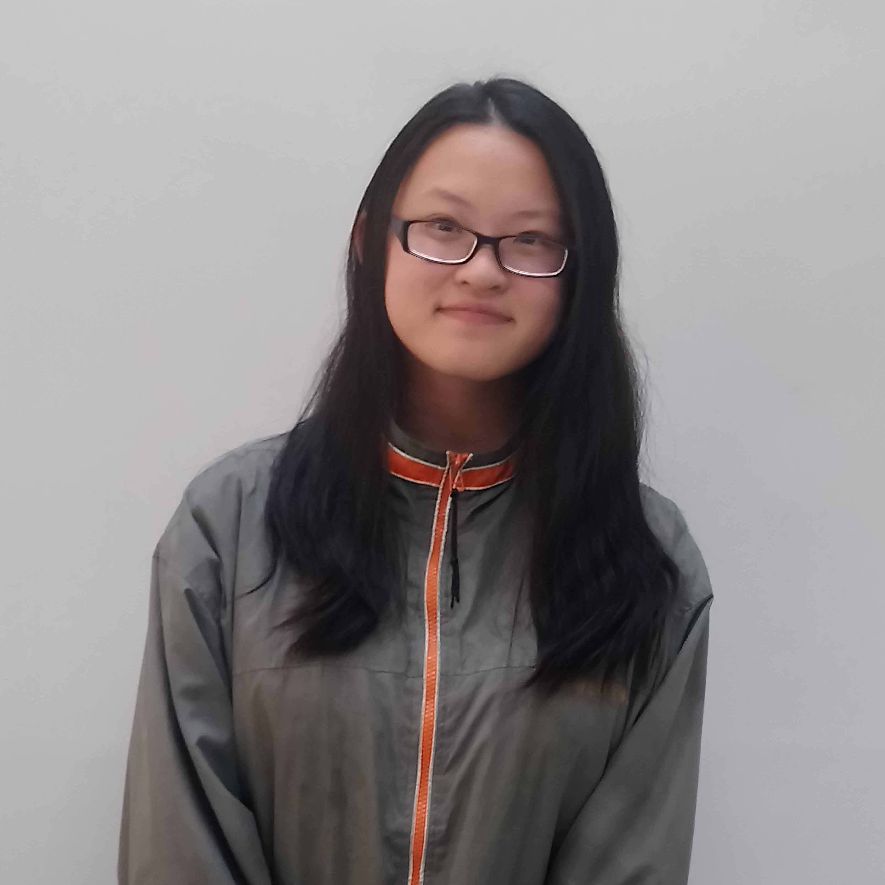
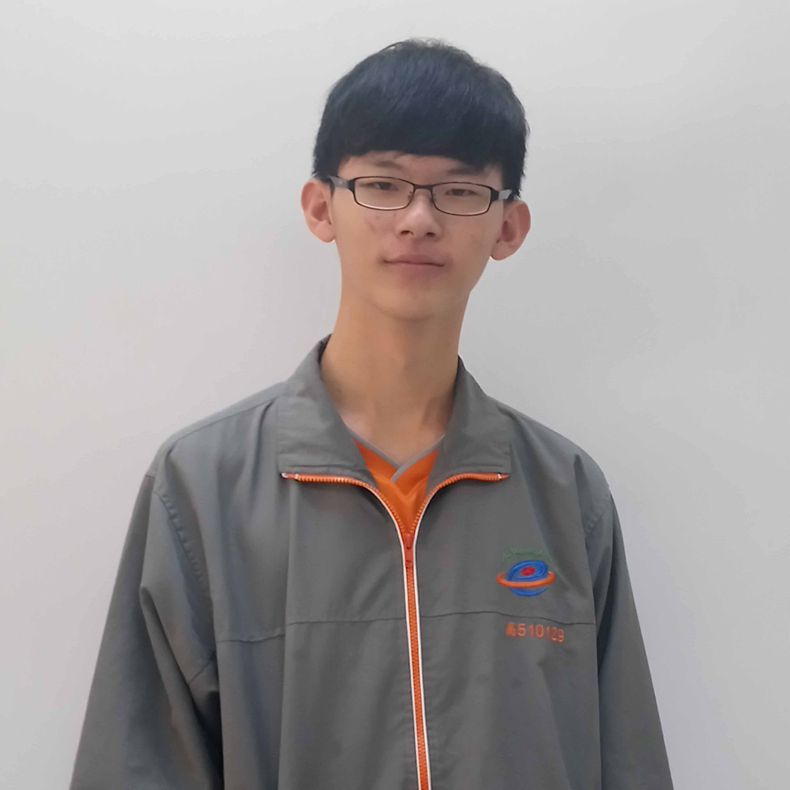
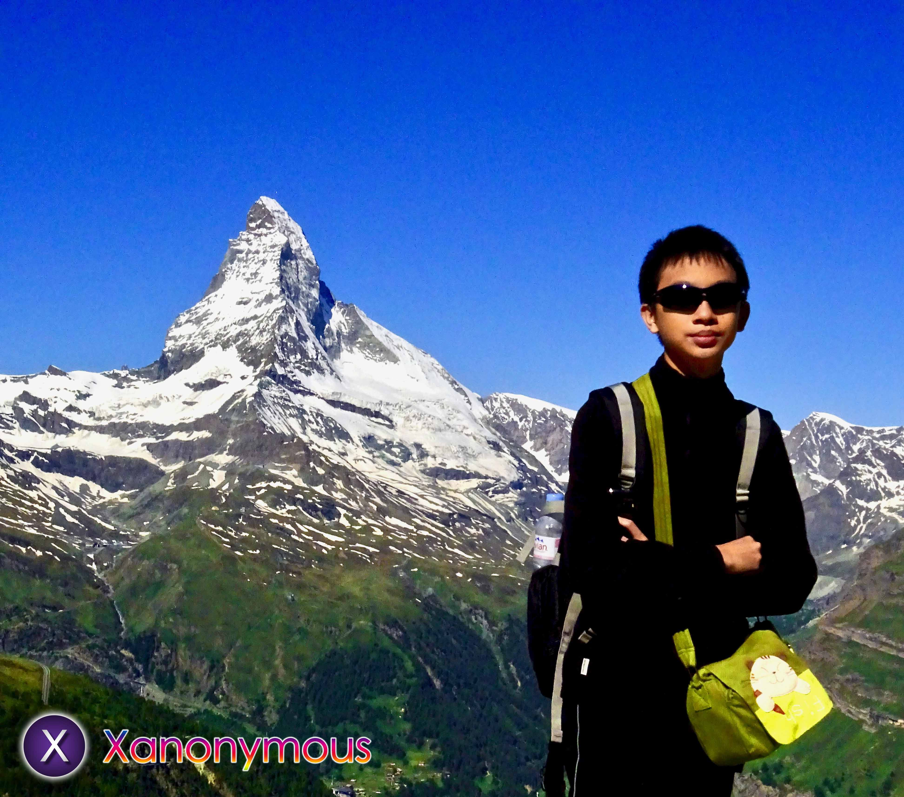
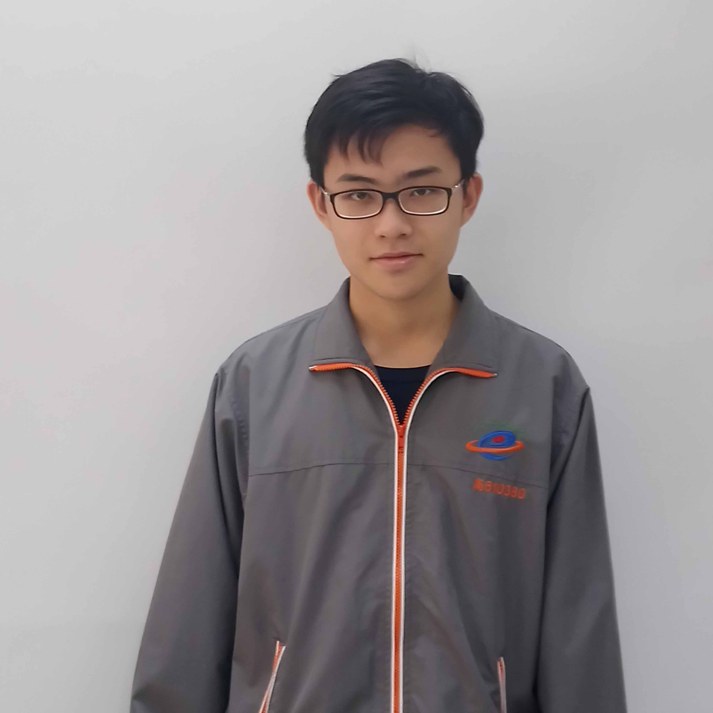
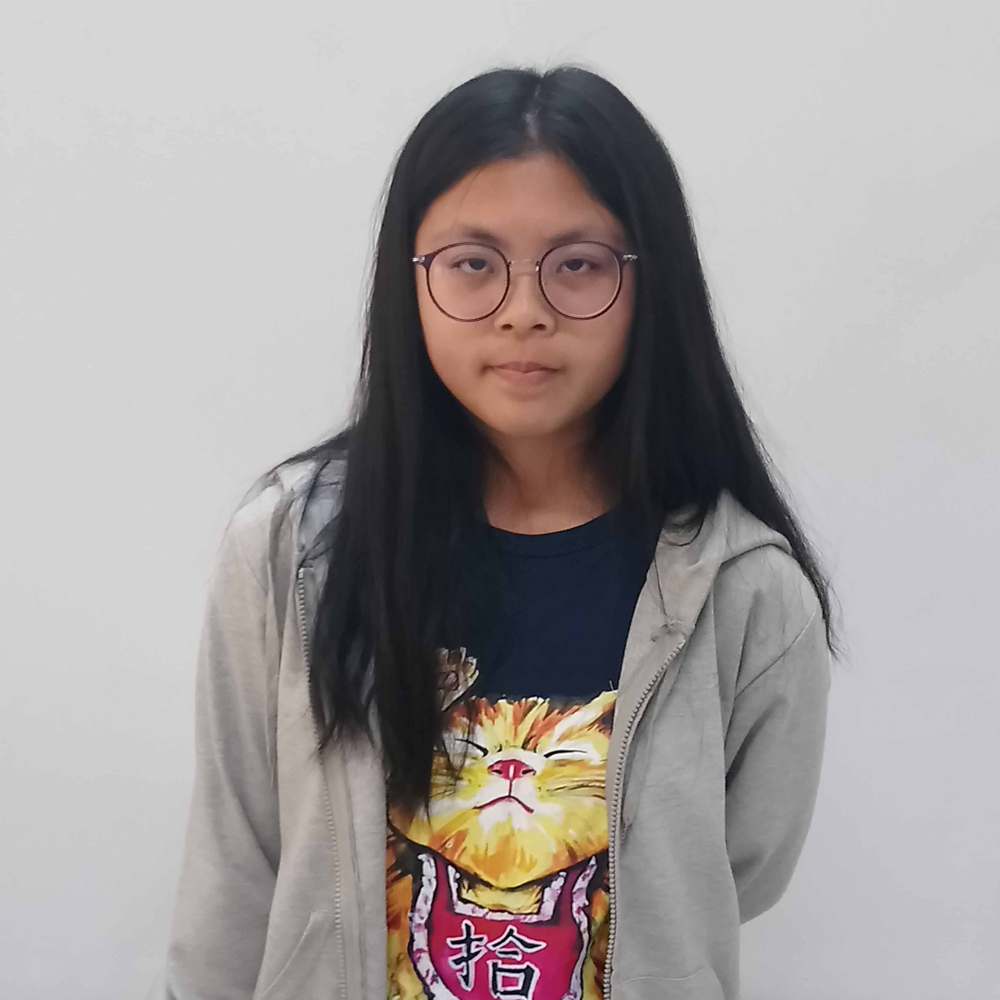
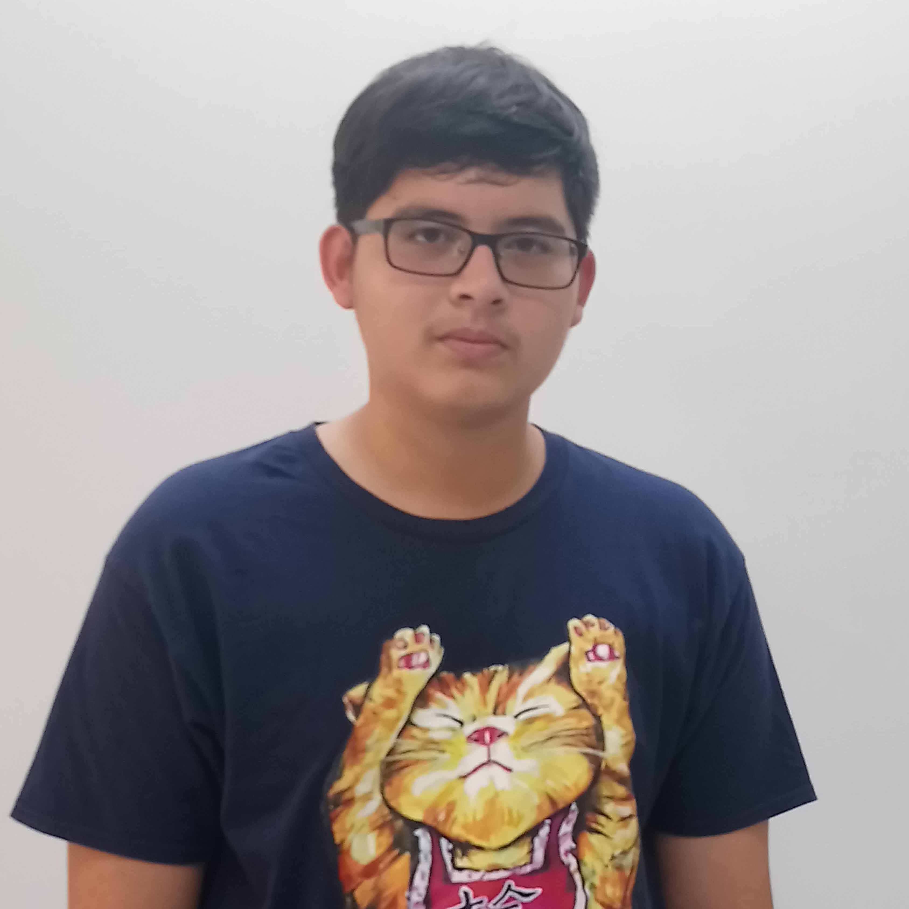

Behind the scenes
Yi-Chen Chou
 Image source: photographed by ourselves
Image source: photographed by ourselves
Participating in this competition makes our life more colorful.
For the interview, we have to learn how to talk politely. For writing, we not only need to tidy up the contents we have interviewed but also need to do the researches. For making web, we not only need to understand the program but also need to ensure every connection and grammars. For translation, Chinese and English have different logic, so we also need to learn to transform. Time management and communication are not only a big challenge but also things we must learn. Experience that learned from stand up after falling down is the most important thing for the future.
Sih-Chi Chung
Image source: photographed by ourselvesAll we need to know is that how to transform the information from interviewer clearly into word.
Many thanks to all our interviewers. Although we sometimes lost our manners and also made some mistake, they were still patient answering our questions. I want to thank our director and teacher too. Even though they were busy, they still helped us and let us learn a lot.
Participating in this competition is a new experience for us. Although we encountered relationship challenge, we still conquered it. I think it was an unforgettable experience that we should cherish it forever.
Cian-Yun Wang
Image source: photographed by ourselvesI didn't expect that I would attend the competition, and I have such good teammates. No matter what the things are, the opportunity to cooperate together is rare. I appreciate that I had a chance to get along with different people and know the place again.
Ting-Kai Jhang
Image source: photographed by ourselvesWhen I first joined in the project I was confused. What should I do? What did I learn? In fact, though Cambridge is close to my junior high school, I thought it just a normal river. However, this project breaks my stereotype. By teacher's leading, we completed those interviews and recorded the things we discovered. It was surprising that the association with government and the citizens brought Cambridge to the world.
Sheng-Han Su
 Image source: photographed by ourselves
Image source: photographed by ourselves
Participating in this competition helps us know about the importance of water environment. At first, we drained the swage just for our convenience. It caused the effect that we had to spend more money and time dealing with it. Although we couldn't see the result immediately, we still believed that we could saw the improvement in the future. In addition, I learned how important team work is. Two heads are always better than one.
Tian-Yo Lin
Image source: photographed by ourselvesAs a web designer of the competition, I learned a lot of professional skills of constructing webs. For example, consistency, coordination and every links. While doing these jobs, I realized what I can do better, the importance of team work and the time management. I hope that those experiences could help me do better in the future.
Kai-Cyuan Young
 Image source: photographed by ourselves
Image source: photographed by ourselves
Through the competition, I discovered that there's lots of people who are better than me, and how important team work is. All of our teammates are amazing. I hoped that the experience that we accumulated would bring us outstanding performance.
Chang-Pei Shih
Image source: photographed by ourselvesAs a member of the team lets me know that although I've been learning English for a long time, translating Chinese into English is still a hard work for me. But after teacher's instruction, I learned a lot of skills. Although it needs perseverance to do this work, having a heart for learning can conquer any challenge. Thanks to teachers and teammates' help, I was glad to have a chance to participate in the competition.
Yi-Chin Jheng
Image source: photographed by ourselvesI'm glad to be one of the translators of the competition. It helps me learn a lot. I learned lots of stories about Cambridge. It really broadens my horizons.
Bing-Rong Ni
Image source: photographed by ourselvesParticipating in the competition let me realize how hard it is to construct a web page. Due to the reason, everyone should do their own work. I am one of the translators of the team. I learned about lots of vocabulary and grammars. Also, I realize how difficult it is to construct the web pages. How amazing it was!